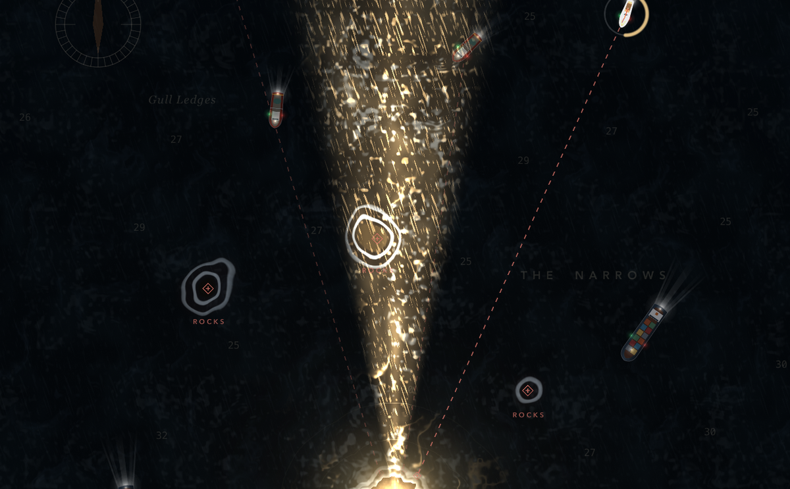

Stormkeeper
One lighthouse. Twelve nights of storm. Hold the light until dawn.

Ships come in blind out of the dark, each running for a rock. Drag anywhere on the sea and the beam swings to your thumb; hold a ship in the light until its ring fills and its safe course shows. Focus the beam, pulse a flash all round, and keep the lamp from overheating or running flat.
Twelve scripted nights, each harder than the last, with fog, squalls and less power to spare. A Game Center leaderboard for every night, Global and Friends.
Nights 1–3 are free. One purchase, The Full Watch, opens nights 4–12 for good. No ads, no timers.